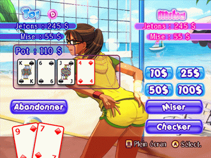
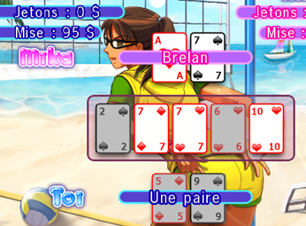

15 |
Texas Hold'em |
 |
|
Jouez au Texas Hold'em contre une superbe fille. Dès que celle-ci n'a plus assez de jetons, elle enlève un vêtement pour avoir de l'argent supplémentaire. Quand il ne lui reste plus que ses sous-vêtements, vous gagnez. Vous pouvez ensuite continuer de jouer avec cette fille pour améliorer votre score.
 Relancer : Misez une somme supérieure à la précédente mise. Vous avez le choix entre 10$, 25$, 50$ et 100$. Suivre : Ajoutez dans le pot une somme équivalente à la mise ou à la relance précédente. Checker : Renoncez à miser lorsque c'est à vous de jouer. Abandonner : Renoncez au pot plutôt que de miser ou de relancer. Voir :  C'est là que les cartes parlent d'elles-mêmes. Vous devez montrer vos mains pour déterminer qui d'entre vous perdra sa chemise. Classement des mains : QUINTE ROYALE : A, K, Q, J, 10 d'une même couleur. QUINTE FLUSH : Cinq cartes de la même couleur qui se suivent. CARRE : Quatre cartes du même rang. FULL : Trois cartes du même rang et une paire. COULEUR : Cinq cartes de la même couleur. QUINTE : Cinq cartes qui se suivent. BRELAN : Trois cartes du même rang. DOUBLE PAIRE : Deux paires de rang différent. PAIRE : Deux cartes du même rang. CARTE FORTE : En l'absence de main, la carte la plus forte l'emporte. |
 |
 |
 |